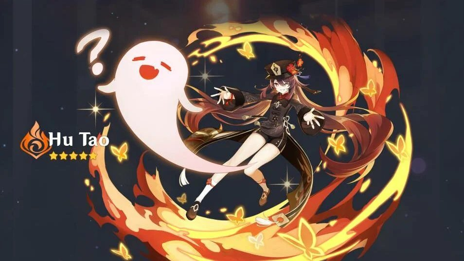

О персонаже
Ху Тао из Геншин Импакт является важной фигурой в похоронном бизнесе Ли Юэ. В совсем юном возрасте она потеряла дедушку, который занимал пост владельца известного ритуального бюро «Ваншэн». Сразу после этого обязанности пали на плечи девушки. С тех пор Ху Тао изо всех сил старается проводить лучшие похороны для людей, оберегая границу между жизнью и смертью. Кроме того, отлично сочиняет стихотворения, которые впоследствии из уст в уста бродят по Ли Юэ.
Таланты
- Скрытое копьё «Ваншэн»: наносит обычные и заряженные атаки
- Путеводитель по загробной жизни: Ху Тао потребляет определённое количество HP, откидывает окружающих её противников и входит в состояние Танец бабочки.
- Упокоение духов: приказывает пылающим духам пуститься в атаку, нанося Пиро урон по большой площади. При попадании по врагу восстанавливает некоторый процент макс. HP Ху Тао
- Порхай как бабочка: после окончания состояния Танец бабочки шанс крит. попадания всех членов отряда (кроме самой Ху Тао) увеличивается на 12% в течение 8 сек
- Кровавая сангина: увеличивает бонус Пиро урона Ху Тао на 33%, когда её HP меньше или равно 50%
- Чем больше, тем лучше: При приготовлении идеального блюда имеет 18% шанс приготовить дополнительное «странное» блюдо того же типа
Рекомендуемые артефакты
Артефакты - важная часть снаряжения персонажа. Для Ху Тао рекомендуется использовать артефакты, повышающие критический урон, критический шанс, атаку и урон от Пиро атак. Это поможет максимально использовать потенциал персонажа.

Горящая алая ведьма — набор артефактов, получаемый в подземелье Скрытый дворец Уван.

Воспоминания Симэнавы — набор артефактов, получаемый в подземелье Кленовый зал.
Рекомендуемое оружие
Для Ху Тао подходят копья, повышающие её атаку и критический удар:
- Посох Хомы
- Нефритовый коршун
- Смертельный бой
- Гроза драконов
- Черногорская пика
Саппорты для Ху Тао
Вот какие персонажи могут быть хорошими союзниками для Ху Тао в команде:
- Син Цю. Снижает входящий урон, раздает постоянный Гидро статус, имеет хороший урон с ульты. Один из лучших саппортов в отряд через Пар
- Е Лань. Позволяет освободить Син Цю для второго отряда, полностью решая вопрос с Гидро аурой. Во время действия взрыва стихии повышает наносимый урон
- Сахароза. Дает рассеивание, понижает сопротивление врагов, стягивает, может с помощью ульты продлевать статусы, раздает мастерство стихий
- Чжун Ли. Самый мощный щит в игре, который к тому же в небольшом радиусе снижает элементальное и физическое сопротивление врагов
- Мона. Способна неплохо накладывать Гидро на врагов. В то же время ее ульта позволяет наносить повышенный урон по врагам благодаря взрыву пузыря и эффекту Омена
Созвездия
Созвездие Ху Тао называется «Бабочка Харона». Прокачивается оно по тому же принципу, что и у других героев, с использованием «Удачи персонажа». Получить ресурс можно, повторно достав героя за молитву.
Лучшее созвездие Ху Тао – С1. Копейщица преимущественно играет от заряженных атак под стойкой элементального навыка, а с получением данного созвездия способность перестает потреблять стамину (выносливость).